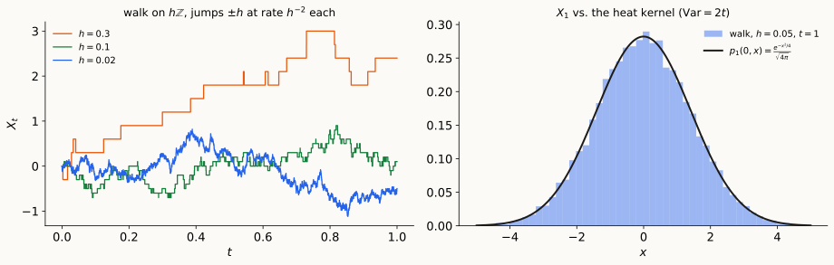
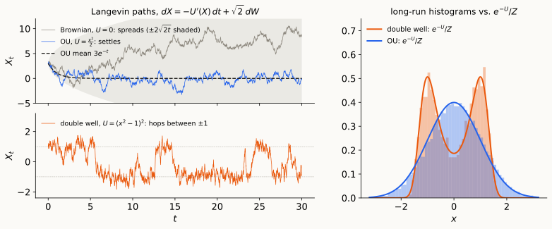
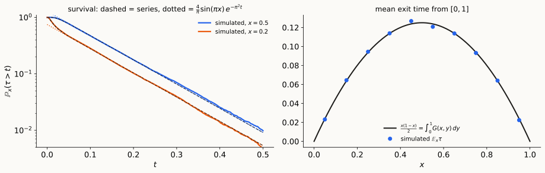

Brownian motion, generators and semigroups, Dirichlet forms,
and what boundaries and killing mean for the spectrum
Normalization for Lectures 15–17: the generator of Brownian motion is \(\Delta\) (not \(\frac12\Delta\)), i.e. \(dX_t=\sqrt2\,dW_t\). This matches the Ornstein–Uhlenbeck operator and the Gaussian LSI of Lecture 13.
Running example: Langevin dynamics \(dX_t=-\nabla U(X_t)\,dt+\sqrt2\,dW_t\), with \(U=0\) (Brownian motion), \(U=\frac{x^2}2\) (Ornstein–Uhlenbeck) and \(U=(x^2-1)^2\) (double well).
Continuous-time walk on \(h\mathbb Z\): jump \(\pm h\), each at rate \(h^{-2}\). Its generator is the path graph with weights \(h^{-2}\): \[\mathcal A_hf(x)=\frac{f(x+h)-2f(x)+f(x-h)}{h^2}\ \longrightarrow\ f''(x).\]

Brownian motion (generator \(\Delta\)) on \(\mathbb R^d\): \(X_t=x+\sqrt2\,W_t\), where \(W\) has continuous paths, \(W_0=0\), and independent increments \(W_t-W_s\sim N(0,(t-s)I)\).
Semigroup and heat kernel: \[P_tf(x)=\mathbb E_x\,f(X_t)=\int p_t(x,y)f(y)\,dy,\qquad p_t(x,y)=\frac{e^{-|x-y|^2/4t}}{(4\pi t)^{d/2}} .\]
Langevin dynamics with a smooth potential \(U:\mathbb R^d\to\mathbb R\): \[dX_t=-\nabla U(X_t)\,dt+\sqrt2\,dW_t .\]
| \(U\) | name | behaviour |
|---|---|---|
| \(0\) | Brownian motion | spreads forever; \(e^{-U}=1\) is not normalizable: no stationary probability |
| \(\frac{\lvert x\rvert^2}2\) | Ornstein–Uhlenbeck (OU) | pulled back to \(0\); \(\pi=N(0,I)\); everything explicit |
| \((x^2-1)^2\) | double well | metastable: stays near \(\pm1\), hops between them |

Itô’s formula. Let \(X\) solve \(dX_t=b(X_t)\,dt+\sigma(X_t)\,dW_t\) in \(\mathbb R^d\), with \(W\) an \(m\)-dimensional Brownian motion and \(b,\sigma\) Lipschitz. Let \(f(t,x)\) be \(C^1\) in \(t\) and \(C^2\) in \(x\). Then, almost surely, for all \(t\ge0\), \[f(t,X_t)=f(0,X_0)+\int_0^t\Big(\partial_sf+b\cdot\nabla f+\tfrac12\operatorname{tr}\big(\sigma\sigma^\top\nabla^2f\big)\Big)(s,X_s)\,ds+\int_0^t\nabla f(s,X_s)^\top\sigma(X_s)\,dW_s .\]
In \(d=1\) with \(U=\frac{x^2}2\): \(\quad dX_t=-X_t\,dt+\sqrt2\,dW_t\).
As on graphs (Lecture 2, §2): the process acts on functions and on measures.
| functions (observables) | measures (distributions) | |
|---|---|---|
| evolution | \(u_t=P_tf\), \(\ \partial_tu=\mathcal Au\) (backward) | \(\mu_t=\mu P_t\), \(\ \partial_t\rho=\mathcal A^*\rho\) (forward) |
| graph | \(H_tf\) | \(\mu^\top H_t\) |
| meaning | \(\mathbb E_x f(X_t)\) | law of \(X_t\) |
For the SDE \(\ dX_t=b(X_t)\,dt+\sigma(X_t)\,dW_t\), Itô’s formula gives the generator \[\mathcal Af=b\cdot\nabla f+\tfrac12\operatorname{tr}\big(\sigma\sigma^\top\nabla^2f\big).\]
Langevin is the reversible diffusion. Let \(\pi\propto e^{-U}\) and \(\mathcal A=\Delta+b\cdot\nabla\). Integration by parts gives \(\ \int g\,\Delta f\,e^{-U}=-\int\nabla g\cdot\nabla f\,e^{-U}+\int g\,\nabla U\cdot\nabla f\,e^{-U}\), so \[\mathcal A\ \text{is reversible for}\ \pi\iff b=-\nabla U:\qquad dX_t=-\nabla U(X_t)\,dt+\sqrt2\,dW_t .\]
\(\Gamma(f,g)=\frac12\big(\mathcal A(fg)-f\,\mathcal Ag-g\,\mathcal Af\big),\qquad\mathcal E(f,g)=\int\Gamma(f,g)\,d\pi=-\int f\,\mathcal Ag\,d\pi\ \) (reversible, stationary \(\pi\)).
| \(\Gamma(f)\) | \(\mathcal E(f,f)\) | |
|---|---|---|
| graph, \(\mathcal A=P-I\) | \(\frac12\sum_yP(x,y)\big(f(y)-f(x)\big)^2\) | \(\frac12\sum_{x,y}\pi_xP(x,y)(f_x-f_y)^2\) (Lecture 4) |
| diffusion, \(\mathcal A=\Delta-\nabla U\cdot\nabla\) | \(|\nabla f|^2\) | \(\int|\nabla f|^2\,d\pi\) |
Brownian motion on \([0,1]\) (generator \(\frac{d^2}{dx^2}\)) needs a rule at the boundary:
| process | boundary condition | graph (Lecture 14) | spectrum on \([0,1]\) |
|---|---|---|---|
| reflected at \(0,1\) | Neumann \(u'(0)=u'(1)=0\) | the path, no boundary term | \((\pi j)^2\), \(j\ge0\) |
| killed at \(0,1\) | Dirichlet \(u(0)=u(1)=0\) | grounded endpoints | \((\pi j)^2\), \(j\ge1\) |
Dynkin with \(\mathcal A=\frac{d^2}{dx^2}\): if \(u''=-f\), \(u(0)=u(1)=0\), then \(\ u(x)=\mathbb E_x\int_0^\tau f(X_s)\,ds\). By Lecture 14, \[\mathbb E_x\int_0^\tau f(X_s)\,ds=\int_0^1G(x,y)f(y)\,dy,\qquad G(x,y)=\min(x,y)-xy .\]

Let the particle die at rate \(q(x)\ge0\) while diffusing. The surviving expectation \[u(t,x)=\mathbb E_x\Big[e^{-\int_0^tq(X_s)\,ds}\,f(X_t)\Big]\qquad\text{solves}\qquad\partial_tu=\Delta u-q\,u,\ \ u(0,\cdot)=f .\]
Compact (interval with reflection, circle, torus, compact manifold): \((\lambda-\mathcal A)^{-1}\) is compact, so \[p_t(x,y)=\sum_k e^{-\lambda_kt}\varphi_k(x)\varphi_k(y),\qquad 0=\lambda_1<\lambda_2\le\dots\to\infty,\] and every theorem of Lectures 3–4 holds: \(\chi^2\) decays at rate \(2\lambda_2\), mixing time \(\approx\frac1{\lambda_2}\log\frac1\varepsilon\) from smooth starts.
\(\mathbb R^d\): Lebesgue measure is invariant but infinite; there is no stationary probability.
To get a stationary probability and a gap on \(\mathbb R^d\), add a confining drift: this is exactly what Langevin’s \(-\nabla U\) does. OU has gap \(\lambda=1\) (eigenfunctions \(x\), \(x^2-1\), … from §1); the double well has a small gap, set by the hopping rate. Next lecture: Hermite functions, Fokker–Planck, and Poincaré for log-concave \(\pi\).
Sample \(x_1,\dots,x_n\) from a density \(\rho\) on \(\mathbb R^d\) (or a manifold), and build a kernel graph \(w_{ij}=k\big(\frac{|x_i-x_j|^2}{\varepsilon^2}\big)\).
| graph (Lectures 2–13) | continuum (today) |
|---|---|
| continuous-time walk, generator \(P-I\) | diffusion, generator \(\Delta+b\cdot\nabla\) |
| heat kernel \(H_t=e^{t(P-I)}\) | \(P_t=e^{t\mathcal A}\), kernel \(p_t(x,y)\) |
| \(\mu^\top H_t\) vs. \(H_tf\) | Fokker–Planck vs. backward equation |
| reversibility \(\Pi P=P^\top\Pi\) | \(\mathcal A\) self-adjoint in \(L^2(\pi)\); gradient drift \(b=-\nabla U\) |
| \(\Gamma(f)=\frac12\sum_yP(x,y)(f_y-f_x)^2\) | \(\Gamma(f)=|\nabla f|^2\) (chain rule holds) |
| Dirichlet form, Poincaré, LSI | same, \(\mathcal E=\int|\nabla f|^2d\pi\) |
| Neumann built in; grounding | reflection; killing (Dirichlet, or rate \(q\)) |
| hitting times, \(L^+\), \(R_{\rm eff}\) | exit times, occupation density \(G\) |
| finite irreducible chain: always a gap | compact: discrete spectrum; \(\mathbb R^d\): no gap without confinement |
Reading: Lecture 2 notes §2; Bakry–Gentil–Ledoux Ch. 1; Pavliotis Chs. 2–3.
| Object | Definition |
|---|---|
| Brownian motion (generator \(\Delta\)) | \(X_t=x+\sqrt2W_t\); \(\ p_t(x,y)=(4\pi t)^{-d/2}e^{-|x-y|^2/4t}\) |
| semigroup, generator | \(P_tf(x)=\mathbb E_xf(X_t)\); \(\ \mathcal Af=\lim_{t\to0}(P_tf-f)/t\); \(\ \partial_tP_tf=\mathcal AP_tf\) |
| Langevin, OU | \(dX=-\nabla U\,dt+\sqrt2\,dW\), \(\ \pi\propto e^{-U}\); \(\ U=\frac{x^2}2\): \(X_t\sim N(e^{-t}x,1-e^{-2t})\) |
| Itô, Dynkin | \(df(X)=\sqrt2\nabla f\cdot dW+\Delta f\,dt\); \(\ \mathbb E_xf(X_\tau)=f(x)+\mathbb E_x\int_0^\tau\mathcal Af(X_s)ds\) |
| diffusion generator | \(dX=b\,dt+\sigma dW\): \(\ \mathcal Af=b\cdot\nabla f+\frac12\operatorname{tr}(\sigma\sigma^\top\nabla^2f)\) |
| stationary, reversible | \(\int\mathcal Af\,d\pi=0\); \(\ \mathcal A\) self-adjoint in \(L^2(\pi)\); \(\pi\propto e^{-U}\): \(b=-\nabla U\) |
| carré du champ | \(\Gamma(f,g)=\frac12(\mathcal A(fg)-f\mathcal Ag-g\mathcal Af)\); \(\ \mathcal E=\int\Gamma\,d\pi\) |
| killing | reflected \(\leftrightarrow\) Neumann; killed \(\leftrightarrow\) Dirichlet; rate \(q\): generator \(\Delta-q\) (Feynman–Kac) |
| exit time, occupation | \(\mathbb E_x\int_0^\tau f(X_s)ds=\int G(x,y)f(y)dy\); \(\ [0,1]\): \(\mathbb E_x\tau=\frac{x(1-x)}2\) |
| sampled graphs | \(\frac c{\varepsilon^2}(P-I)\to\Delta+2(1-\alpha)\nabla\log\rho\cdot\nabla\) |